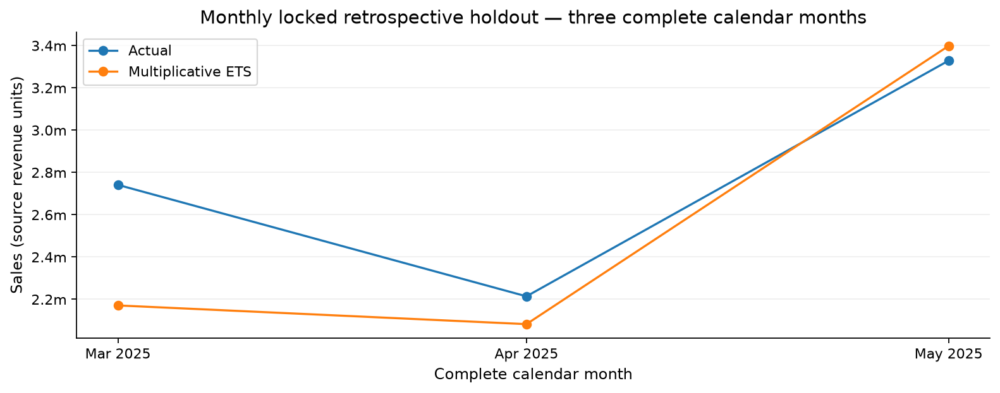

Time series · Business analytics
Sales revenue forecasting
How reliably can historical sales inform the next forecast?
I turned 60,097 transaction lines into weekly and monthly series, then compared forecasting methods using chronological validation.
The monthly forecast tracked the April-to-May rise, but underpredicted March. Aggregation changes the forecasting problem, so weekly and monthly error rates need separate interpretation.

The process
How I approached it
-
Build a usable time series
Joined sales with product, region and salesperson lookups, reviewed missingness and order keys, and constructed complete weeks and calendar months.
-
Respect time in evaluation
Used chronological development folds and earlier inner folds to compare settings without randomly mixing past and future observations.
-
Compare forecasts at two horizons
Selected multiplicative Prophet for 13-week forecasts and ETS with additive trend and multiplicative seasonality for three-month forecasts.
The evidence
What the results show
Monthly ETS: 9.31% WAPE
Recorded error across three complete retrospective months. WAPE expresses absolute error relative to total actual sales; it is not an accuracy percentage.
Weekly Prophet: 23.87% WAPE
Recorded error across 13 retrospective weeks. A smaller monthly error does not prove a better model because aggregation and evaluation horizons differ.
Reading the results responsibly
Where the evidence stops
The evaluation periods had already been examined and are labelled retrospective. Irregular recording in 2022 and fewer than four annual cycles limit the conclusions. Filling an unrecorded day with zero sales does not establish zero demand. The forecasts are anchored to May 2025, not today.
What I would evaluate next
Use newly observed sales for prospective evaluation and revisit the model comparison if recording patterns, promotions or seasonality change.
Explore the work
The repository includes code, aggregate tables, charts and model recipes. The workbook and original serialized models remain local because those models embed observed sales history. Training on an authorized new series is supported.
Code, results & methodology